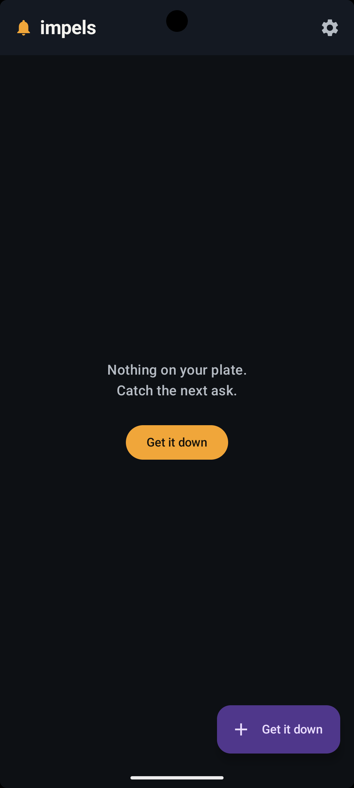
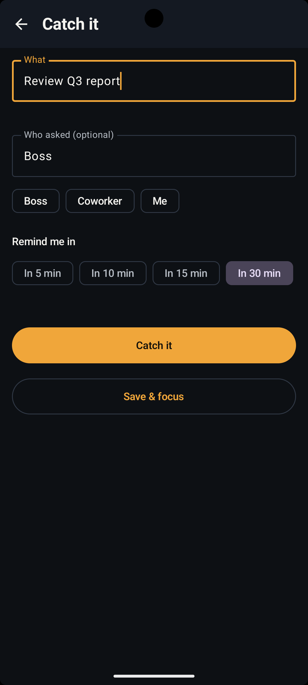
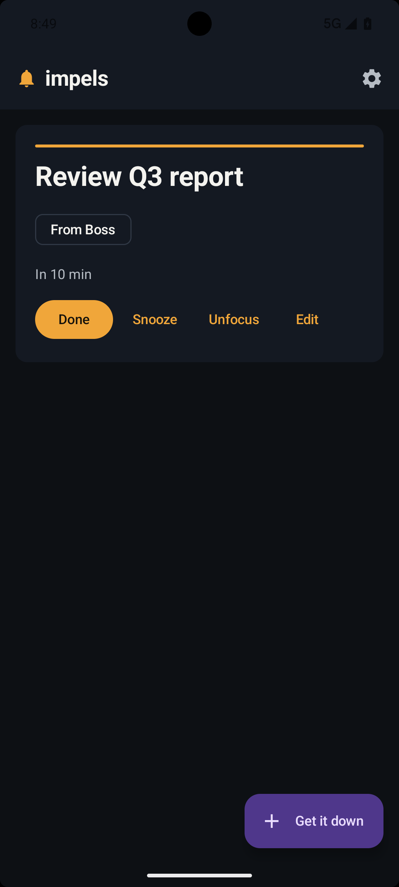
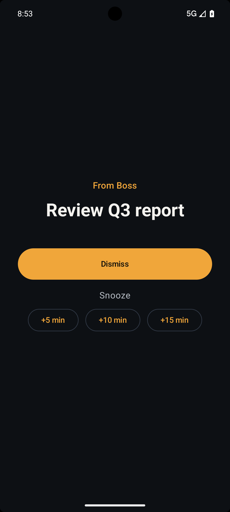

Catch it fast
Open the app and you're two taps away from capturing whatever just came up.
Coworker pings, boss drops a task, you're mid-focus. Catch it in two taps, pick a time, and it rings like an alarm until you deal with it.
Download the beta (APK)Android only · free beta · sideload the APK

Open the app and you're two taps away from capturing whatever just came up.

Park it, pick a time, back to focus. It rings when you asked it to.

One big card for what's next. The rest wait in queue below.

Don't wait until a bit becomes never. Set a time and it comes back ringing.
Grab the beta and start catching every ask.
Download the beta (APK)Android only · free while in beta · you may need to allow install from unknown sources.
A to-do just sits there quietly. impels rings like a full-screen alarm at the time you set, so the task is impossible to ignore.
Yes. It uses exact alarms and a full-screen alarm that fires over the lock screen, with sound and vibration, like your clock app.
Yes for now. Android first, where reliable background reminders are strongest.
Download it, tap the file, and allow install from unknown sources if your phone asks. It is a free beta.